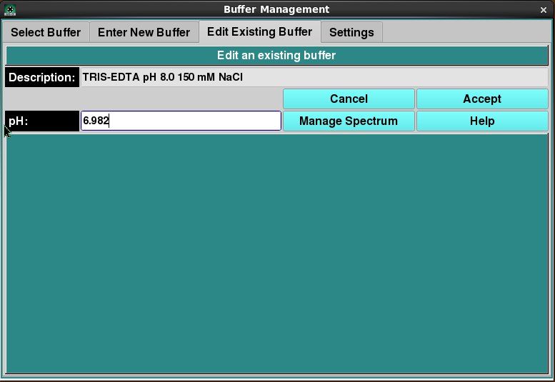

Manual
Manual
Manual
Manual

Using this panel, you can change non-hydrodynamic characteristics of a buffer previously selected in the Select Buffer panel.
Once any desired modifications have been made, clicking on the Accept button will return you to the Select Buffer panel with a modified buffer.
As with all panels, a set of tabs allows you to navigate to other panels in order to perform specialized subtasks relating to buffer management. Links to and summaries of the panels are given in the final section of this page.
No other parameters than those indicated in this panel may be modified for an existing buffer. This is because existing buffers may be already associated with solutions and runs. Changing hydrodynamic characteristics already associated with models will invalidate those models.
To create a buffer with most characteristics similar to an existing one, the users should note those characteristics; then name and enter a new buffer in the Enter New Buffer panel, with selected parameters changed.
In each panel, tabs are visible at the top of the window to enable the user to move to another panel, to perform specific buffer subtasks.